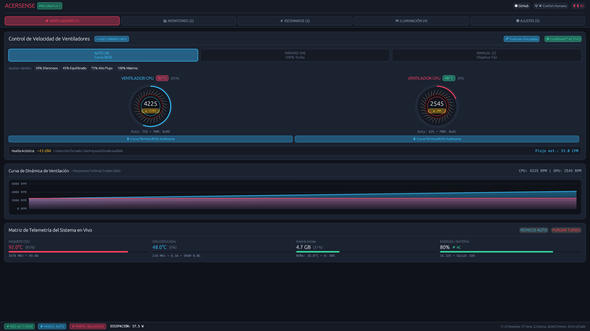

Mis Repositorios & Herramientas
Ecosistema de código abierto para ciberseguridad ofensiva, reversing de hardware y utilidades de sistemas.
🛠️ Proyectos Principales & Suites de Combate
⚡ AcerSense Pro v2.1.0 — InsydeH2O BIOS Reversing & Linux Suite (Rust Edition)

Suite nativa en Rust con interfaz OpenGL acelerada por GPU a 60+ FPS para control térmico de turbinas duales (5,400 / 6,122 RPM), envolventes de energía EPP, iluminación RGB de 4 zonas y gestión integral de hardware en Linux, desarrollada tras realizar ingeniería inversa de firmware UEFI InsydeH2O (opcode WMBH 0x820009).
- Objetivo: Superar el bucle de anulación en Ring -2 (SMM) y otorgar control directo del Embedded Controller (EC) en Ring-0 sin depender del software privativo de Windows.
- Novedades v2.1.0: Suite ergonómica de 25 temas visuales con cambio en caliente (
[T]), motor multilingüe en 10 idiomas con fuentes CJK ([L]), perfiles EPP de CPU (Quiet, Balanced, Performance, Turbo), bloqueos tácticos de gaming (WinKey, Touchpad, LCD 3ms) y módulos nativos para Waybar/Polybar. - Stack: Rust +
eframe/egui(OpenGL) + WMI/ACPI bare-metal + UDEV/HWDB scancode remap.
sudo dpkg -i acersense_2.1.0_amd64.deb
# Opción 2: Compilación bare-metal con Cargo
git clone https://github.com/rodrigo47363/acersense-linux.git && cd acersense-linux
cargo build --release
sudo ./target/release/acersense-gui
# Telemetría en vivo a 60 FPS: # [*] Embedded Controller EC Compal inicializado (0x62 / 0x66) # [+] CPU Fan: 5,660 RPM | GPU Fan: 6,122 RPM [Max Cool Mode: ACTIVE] # [+] Envolvente EPP: Turbo | Idioma: ES | Tema: Red Audit (Offensive)
📡 NekoFi.sh — Automated WiFi Security Framework
Framework modular en Bash diseñado para la automatización de auditorías WiFi en despliegues reales. Orquesta interfaces inalámbricas, inyección de tramas de desasociación quirúrgicas, y ataques WPS/WPA2/WPA3 sin intervención manual propensa a fugas operativas.
- Objetivo: Reproducibilidad táctica, auditoría rigurosa y OPSEC (reducción de errores humanos y descarte de procesos conflictivos).
- Highlights: Comprobación dinámica de dependencias, modo desatendido (
--auto), captura limpia de PMKID/handshakes y gestión transparente dewpa_supplicantyNetworkManager.
git clone https://github.com/rodrigo47363/NekoFI.git && cd NekoFI
chmod +x nekofi.sh
sudo ./nekofi.sh --auto
# Output esperado:
# [*] Iniciando NekoFi.sh framework...
# [+] Interfaz wlan0 detectada. Aislando procesos conflictivos (airmon-ng check kill).
# [+] Levantando interfaz en modo monitor (wlan0mon)...
# [+] Escaneo en curso: Capturando beacon frames y evaluando vectores WPS/PMKID.
🕵️ OSIdentifier.py — Passive OS Fingerprinting
Herramienta de Python que clasifica sistemas operativos remotos analizando heurísticamente los valores TTL y firmas TCP/IP de paquetes capturados en la red, garantizando cero interacción activa con el target para máxima discreción operativa.
- Objetivo: Reconocimiento sigiloso (Stealth) en redes corporativas con sistemas IDS/IPS activos.
- Stack: Python 3 +
scapypara disección e inspección de paquetes en modo promiscuo a bajo nivel.
git clone https://github.com/rodrigo47363/OSIdentifier.git && cd OSIdentifier
sudo python3 OSIdentifier.py --interface wlp3s0 --capture-time 60
# Output esperado:
# [+] Sniffing activo en interfaz wlp3s0 (0 paquetes emitidos)...
# [+] Host: 192.168.1.15 | TTL: 64 | OS Inferido: Linux/Unix (Kernel 5.x/6.x)
# [+] Host: 192.168.1.45 | TTL: 128 | OS Inferido: Windows 10/11 Enterprise
🚀 AutoBurp.sh — Automated Burp Suite Deployment Suite
Utilidad idempotente en Bash para automatizar la instalación, configuración de dependencias, atajos de escritorio y despliegue continuo de PortSwigger Burp Suite en distribuciones Linux de pentesting (Parrot OS, Kali Linux, Debian).
- Objetivo: Estandarización de entornos de auditoría web y reducción a cero del tiempo de setup en nuevas máquinas operativas.
- Highlights: Detección y aprovisionamiento automático del runtime Java OpenJDK compatible, generación de lanzadores en
/usr/local/bine integración nativa con menús XDG y Rofi.
git clone https://github.com/rodrigo47363/AutoBurp.git && cd AutoBurp
chmod +x autoburp.sh
sudo ./autoburp.sh --install
# Output esperado:
# [*] Comprobando entorno de ejecución y dependencias OpenJDK...
# [+] Runtime Java verificado. Descargando última versión de PortSwigger.
# [+] Binario configurado en /usr/local/bin/burpsuite y acceso directo creado.
📦 Catálogo Completo de Repositorios Públicos
Cargando repositorios...-
Cargando telemetría de GitHub...
Obteniendo el catálogo de repositorios desde la API oficial.
📜 Rules of Engagement (RoE) y Contribuciones
Todo el código, frameworks, scripts y pruebas de concepto (PoCs) alojados en mis repositorios están desarrollados estrictamente para auditorías autorizadas, simulaciones Red Team en entornos controlados y propósitos de investigación técnica. El operador es el único responsable de contar con el debido acuerdo de autorización por escrito antes de cualquier despliegue.
Pautas de Contribución y PRs: Se fomenta la colaboración técnica enfocada en la eficiencia, el sigilo operacional y la seguridad de memoria. Para contribuir: genera un fork del repositorio, desarrolla tus cambios en una rama descriptiva y valida que los scripts respeten directivas defensivas (set -euo pipefail) o tests unitarios pertinentes.